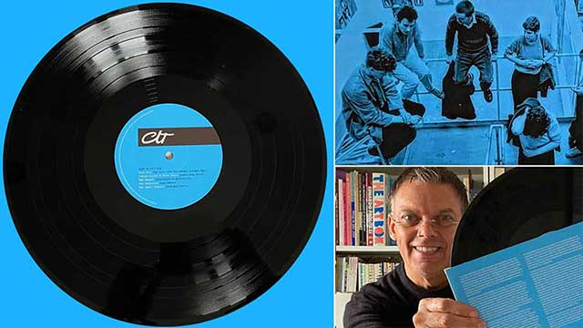
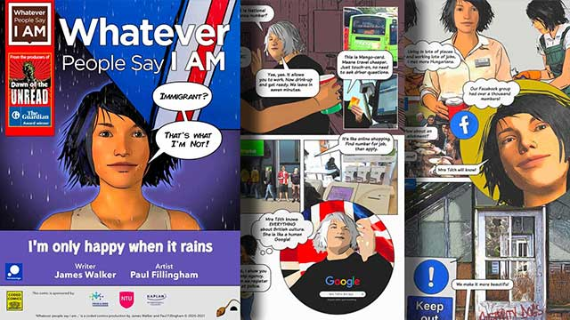

Friends of Pleasley Pit 30th Anniversary
Illustrated timeline, documenting the efforts of the volunteers who have restored this historic industrial site.
Download PDF
Pleasley Pit Mining Museum Guide
Companion print publication for the MyTrail Pleasley Pit Mobile Tour Guide. Produced as part of the Nottingham Trent University research project MineCraft The Prequel.
Download PDF
Mine-craft the Prequel (The workshops)
Publication documenting outreach workshops attended by former mineworkers. Part of the Nottingham Trent University research project Mine-craft The Prequel.
View publication
Banners and Beyond
Key Stage 4 Education booklet documenting the history of the iconic Mining Union Banner in Nottinghamshire.
Download PDF
The Art School Dance Goes On: Leeds Post-Punk 1977-84
Limited edition, double vinyl compilation LP (Caroline True Records). Audio companion to the book No Machos or Pop Stars by Gavin Butt (Duke University Press).
Buy the Record
Whatever people say I am
Challenging stereotypes through comics. Issue 4 'I'm only happy when it rains'. Artist Paul Fillingham, Writer James Walker.
Download PDF
Mine-craft the Prequel
Rare photographs from the East Midlands coalfield spanning over 100 years, documenting the evolution of a highly mechanised industry. Nottingham Trent University.
Download PDF
Dawn of the Unread
Zombie genre graphic anthology based on The Guardian Award-winning digital platform. Supported by UNESCO.
Buy the book